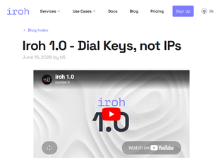
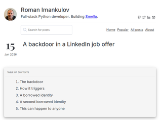
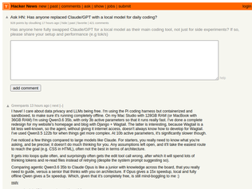
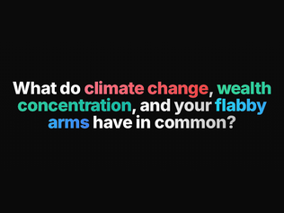
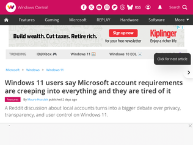
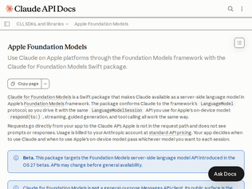
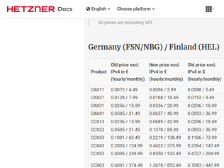

"If you're new to Iroh, my mental model is roughly "Tailscale at the application layer instead of the network layer".If your question is, "why not just use Tailscale?", look at it from an app developer's perspective. If you want to release an app and have instances of your app be able to easily connect to each other, you could theoretically embeded Tailscale functionality into your app, but then the users of your app need Tailscale accounts, and your app is dependent on Tailscale.Iroh lets you embed this functionality directly, and provides public fallback relays. If your app gets too big for the public relays, using your own relays is the flip of a switch."
"I am one of the iroh developers.A question that frequently comes up: when will iroh support webrtc, or BLE, or LoRa, or ...Iroh as of now supports only IPv4, IPv6 and relay transports out of the box. There is such a large variety of potentially interesting transports out there that we can't support all of them without turning the codebase into an unmaintainable maze of feature flags.But we have added the ability to implement custom transports. That way your transport implementation can live in a completely separate crate.Existing experimental custom transports include Tor, Nym and BLE. https://github.com/mcginty/iroh-ble-transportHere is how custom transports work under the hood: https://www.iroh.computer/blog/iroh-0-97-0-custom-transports..."
"> Dial keysMaybe it's in the video I didn't watch, but I really think paragraph one should make clear what kind of keys and why. Cryptographic? Asymmetric? How do they do the job, at even the most basic level? It never explains, just dives into abstract claims of superiority and usage stats. I gather relays are involved; this would be a good thing to mention right away instead of making me sift it from the HN discussion."

"> a recruiter at a small crypto startup [...] she described a broken proof-of-concept they needed a lead engineer for, and then sent me a public GitHub repo to review. Specifically, she asked me to “check out the deprecated Node modules issue.”> ...buried between walls of commented-out tests, the payload runs anything the server sends back to your machine.> npm runs prepare automatically after npm install, so just installing dependencies executes the backdoor.> The instruction to “check out the deprecated Node modules issue” was bait to get me to run npm install.Great catch. I've not been phished on LinkedIn before. Surprised it's getting this bad."
"The difference between pre- and post-chatbot writeups is stark: https://igor-blue.github.io/2021/03/24/apt1.html$100 says OP is Claude"
"So, this is a crime right? Why isn't there a well known '911' for cybercrime to report things like this to and get help? Society needs to catch up with the actual dangers out there and build support networks for this ASAP. This is organized crime and needs organized defense to deal with it."

"I have! I care about data privacy and LLMs being free. I'm using the Pi coding harness but containerized and sandboxed, to make sure it's running completely offline. On my Mac Studio with 128GB RAM (or MacBook with 36GB RAM) I'm using Qwen3.6 35b, with only 3b active parameters so that it runs really fast. I've done a complete redesign for my website's homepage and blog with Django + Wagtail. The latter is interesting, because Wagtail is a bit less well-known, so the agent, without giving it internet access, doesn't always know how to develop for Wagtail. I've used Qwen3.5 122b for when things get more complex. At 10b active parameters, it's significantly slower though.I've noticed a few things compared to large models like Claude. For starters, you really need to know what you're asking, and be precise; it doesn't do much thinking for you. Any assumptions left open, and it'll take the easiest route to reach the goal (e.g. CSS in HTML), often not the best in terms of architecture.It gets into loops quite often, and surprisingly often gets the edit tool call wrong, after which it will spend lots of thinking tokens and re-read files instead of retrying (despite the system prompt suggesting so).Comparing agentic Qwen3.6 35b to Claude Opus is like a junior with knowledge across the board, that you really need to guide, versus a senior that thinks with you on architecture. If Opus gives a 15x speedup, local and fully offline Qwen gives a 5x speedup. Which, given that it's completely free, is still mind-boggling to me :)"
"For personal use, yes.I replaced a $100/m subscription to claude in favor of running pi harness pointed at unsloth studio, using both qwen (unsloth/Qwen3.6-35B-A3B-MTP-GGUF) and gemma (unsloth/gemma-4-26B-A4B-it-GGUF) models, depending on my mood.I have a machine I built about 5 years ago with dual RTX3090s in it (I was going to build a new gaming machine anyways, and the llama release had just dropped so I tacked another used 3090 onto the build), and I get ~150tok/s on either of those models (at UD-Q4_K_XL quant) and can use the entire 300k context length without having to exit VRAM.To be very clear - it's not as good as claude. But it's free and not so much worse that it matters significantly.For my personal needs, free beats $100/m.I also have an openclaw instance pointed at the same inference server, and it's great for that (genuinely solid use-case for local models).Some example projects- Replacement launcher for android tvs (with usage monitoring and tracking for kids)- Custom admin portals for my k8s cluster services- Custom home assistant integrations/automations (recently some shelly devices for power monitoring and switching)- Grocery list management and meal planning (mostly via openclaw)- some custom workflows for 3d asset generation in comfyui.---Long story short, if you're trying to make money via software... I'd probably still recommend using a paid provider. But the local models are very capable of cool stuff."
"I tried but OpenCode doesn't have great local model integration. It's just a pain in the ass to set-up.Plus, you now have zero-data retention models, so the privacy argument has kind of faded."
"This is awesome! To offer some constructive feedback: the wind direction could be clearer. More particles flowing across the waters! Especially when the direction is changing. Looking up at the wind teller is unintuitive, even for this old sailor who understands where it comes from. I also didn't always feel like it mattered which direction I angled my sails, only how much I angled them. Like I could angle them for a port wind when in reality I had a starboard wind, and I'd sail just fine.In the other hand that made it easier, and it was already hard enough lol! I bet it's easier on desktop though...Edit: you should add a race/regatta mode!"
"There's a vague correlation between wind direction and sailing speed, but there's nothing real here. The mechanics of sailing upwind, downwind, or the cost of tacking are interesting mechanics that aren't explored here whatsoever. The dead angle on a ship with a square rig should be massive. This ship goes upwind like it has a motor."
"Great! I feel well positioned to say this is great :) I’ve been hoping for something like this.My ideal: slower, more real time, full maps based on actual locations, replay specific naval battles. Multiplayer (maybe it is?), realistic fog of war. I could go onEdit: a few more. Sail trim is clunky and seems unresponsive or unclear how it maps to physics. Would be better to have trim on one side and steering on the other. Also to turn off tacking with tap. Steering too sensitive. The battles are great. (All on mobile)"
"The headline buried the lede -- this is a way to get some summer vacation (niiice) AND encourage enterprise support contracts, which will still have availability. I don't think I've heard of this particular open source / support / summer vacation business model before but I like it!"
"> > The bad guys won’t rest> Probably not. But we will.A pleasant dose of humanity in decidedly inhuman times."
"For the people here who want to do the same when they are vacation (be completely detached from work): Make it impossible for you to work! Leave your work devices behind! Log out of all accounts, remove 2FA keys after backing them up on paper and tell your partner to not give them back to you for the duration of your vacation, etc. I actually went to a country from which I wasn't allowed to work remotely. Crazy but it was that bad for me.Signed: Former workaholic."
"This happens in any industry where value/status are at a premium.Finance, Law, VC guys were good too in the beginning but when the value/status change happens it attracts certain kind of guys who are average in talent but excel in demonstrating value and social management of the value/status.Another change which has happened recently is that the economics of engagement farming have become common place wisdom as already proven effective for everything from selling books, personal brand, career skill/virtue signalling, staying relevant.Due to this everyone is talking more without restraint and not keeping in their own lane of earned expertise."
"I don’t know why you’d think “being interested in nerdy stuff like computers” would somehow translate into virtuous behavior. They seem like entirely different things to me, in the sense that I wouldn’t expect a writer, or a baker, or a chef to have typical ethical behaviors as a group.“What happened” was just that some people got rich and powerful and their real personalities showed through. This is not a new thing in any sense at all, from Rockefeller to Bill Gates – both “technology entrepreneurs”."
"You listen to the Radio Channel you picked. I understand the complaint, though it's like a complain that nerds featured in Cosmopolitan aren't as nerdy as they were.Musk for me was never a nerd. Many "founders" aren't nerds for me. In the end, I wouldn't classify anyone who is "money" first as a nerd - to me they are businessmen (and businesswomen) in their core.Want to see "the lost nerds"? Here, on HN there are many very high-profile nerds. People who built the internet and the most popular tools exchanging insight and jokes over posts. Many founders who aren't loud, who aren't about PR.So - nothing happened. Author looks for them in wrong places."

"The webpage linked is an example of everything I wish people would stop doing in web design.Fortunately, at the bottom there is a link to the "technical documentation" (https://squeezlabs.github.io/handcrank/) which is vastly improved (aside from being light-mode-only and linked from a dark-mode-only marketing page). It also gives me much more interesting information (specifically: models that can apparently run acceptably on a Pi 5).Please let me read your content with a scrollbar that works the way scroll bars are supposed to, rather than turning everything into a weird slide show where you don't actually know when the next slide is coming. Please let me just click on buttons that look like links to more information, without JavaScript."
"My partner just got a rowing machine that offered "watts" as a unit of how hard you're going (like "calories" or "mph") and got me wondering if they made rowing machines that could slowly charge a battery, and how much I'd need to row to power one of them fancy newfangled M5 Max MacBooks answering prompts.All that to say, CrankGPT, I am your target demographic and if you don't respond to my request for a demo I'll be cranking my keyboard with bad reviews online. Or cranking a rowing machine that powers an LLM to do it for me. Wait..."
"I can do high level thinking for around 6 hours with just two scrambled eggs and a cup of coffee.What I need is something to prevent me from context drift. /starts googling how many scrambled eggs are equivalent to the energy consumed by a data center. Google how many chickens are in the world.../"

"I enjoy windows 10 hugely now that it is out of support. It became way better when microsoft started tormenting the users of win11 instead of win10, and now that windows update doesn't bring new catastrophes and unexpected reboot, the OS is finally not interfering with usage anymore."
"> "To avoid the next problem: 'Microsoft locked my data behind bitlocker, and now I can't get it back.' they need to store that key on the MS account."Doesn't that make the account requirement even more scary? So now if MS decides for some reason to lock my account, this will make even the data I have on my local disks inaccessible as well?"
"One thing I disagree with the article about is that drives should not be encrypted by default. For the vast majority of people an encrypted drive is just data loss lying in wait.I prefer to use non-encrypted drives so I have the option of popping out the disk and reading it from another system with ease, which also means that I can recover files from drives of otherwise dead systems just as easily. This is a trade off I'm willing to make over losing access to data.I understand business uses for it, and for that they have an IT team to manage key backup and backups in general. Plus when you're using company equipment it is theirs, not yours."

"This is Apple commoditizing LLMs while keeping control of the UX.They are a hardware company and will keep selling the best machine for AI use. Well done."
"> a Swift package that makes Claude available as a server-side language model in Apple's Foundation Models frameworkAhh I was hoping for the opposite: all of the existing features of Claude Code but somehow running locally on my laptop's neural engine. A pipe dream on an M2 with 8 GB of RAM, but I had a flicker of hope there."
"This isn't Claude specific. Developers can also write apps that call Google's server based Gemini models.> At WWDC, Apple announced that it's opening its Foundation Models framework to third-party cloud model providers. Starting with iOS 27, macOS 27, iPadOS 27, visionOS 27 and watchOS 27, model providers can implement the new public LanguageModel protocol to provide a common interface for model inference. We've made Gemini models available to the Foundation Models framework through the Firebase Apple SDK.This provides a fully native development experience — cloud-hosted Gemini models can plug directly into the Foundation Models framework using the same API. That means the on-device Apple model and cloud-hosted Gemini models sit behind a shared API surface, so you can easily swap between local and cloud inference to fit your use case.https://blog.google/innovation-and-ai/technology/developers-..."

"This is just the reality of hardware costs now. RAM and Disk are scarce, prices have skyrocketed.I wonder how much leverage the hyperscalers like AWS/GCP/Azure have on their own supply chain to keep costs level in their clouds."
"It really is an absolute massive jump. Have no clue what's going on in the back to warrant a 3x increase... 25-50%, sure.. but 3x is wild."
"There can only be so many "I saved 10x by moving to Hetzner" posts before they pick up the value they were leaving on the table..."

Iroh 1.0
"If you're new to Iroh, my mental model is roughly "Tailscale at the application layer instead of the network layer".If your question is, "why not just use Tailscale?", look at it from an app developer's perspective. If you want to release an app and have instances of your app be able to easily connect to each other, you could theoretically embeded Tailscale functionality into your app, but then the users of your app need Tailscale accounts, and your app is dependent on Tailscale.Iroh lets you embed this functionality directly, and provides public fallback relays. If your app gets too big for the public relays, using your own relays is the flip of a switch."
"I am one of the iroh developers.A question that frequently comes up: when will iroh support webrtc, or BLE, or LoRa, or ...Iroh as of now supports only IPv4, IPv6 and relay transports out of the box. There is such a large variety of potentially interesting transports out there that we can't support all of them without turning the codebase into an unmaintainable maze of feature flags.But we have added the ability to implement custom transports. That way your transport implementation can live in a completely separate crate.Existing experimental custom transports include Tor, Nym and BLE. https://github.com/mcginty/iroh-ble-transportHere is how custom transports work under the hood: https://www.iroh.computer/blog/iroh-0-97-0-custom-transports..."
"> Dial keysMaybe it's in the video I didn't watch, but I really think paragraph one should make clear what kind of keys and why. Cryptographic? Asymmetric? How do they do the job, at even the most basic level? It never explains, just dives into abstract claims of superiority and usage stats. I gather relays are involved; this would be a good thing to mention right away instead of making me sift it from the HN discussion."